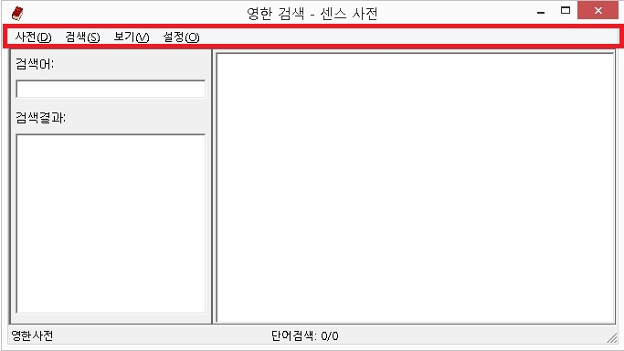
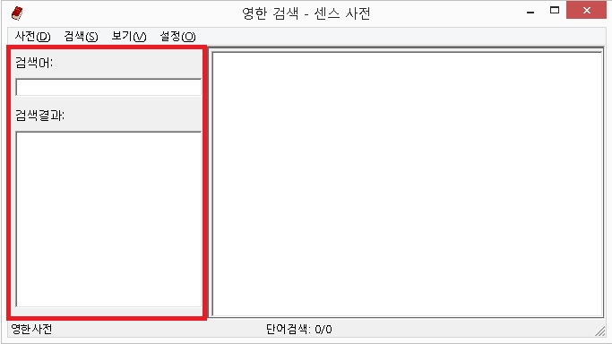
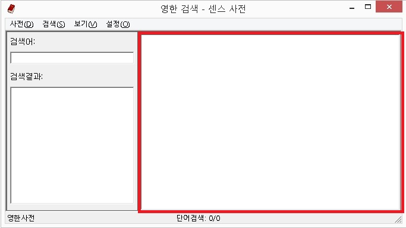
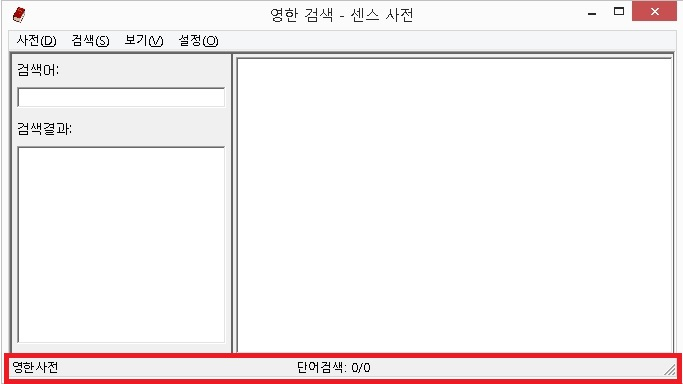

센스 사전의 화면은 크게 메뉴바(상단), 검색창(좌측), 내용표시창(우측), 상태바(하단) 등으로 구성됩니다.
메뉴바는 센스 사전의 모든 기능을 윈도우즈의 기본 메뉴형태로 제공하고 있습니다. 메뉴바는 사전, 검색, 보기, 설정으로 구성되어 있으며, <Alt>키나 <Ctrl+F10>키를 누르면 메뉴를 불러올 수 있습니다.

검색창은 검색어를 입력하거나 검색 결과 목록을 선택하는 곳으로 '검색어' 편집창과 '검색결과' 목록상자로 구성됩니다. 이 두곳을 이동할 때는 <Tab>키를 이용합니다.

최종 검색 결과 내용이 표시되는 곳으로 하나의 편집창으로 구성되어 있습니다. 일반적인 편집창 사용법과 동일하게 검색 내용을 확인할 수 있습니다.
* 좌측의 검색창과 우측의 내용표시창은 <F6> 키나 <Ctrl-Tab> 키를 눌러 전환합니다.

현재 선택된 사전, 검색 종류, 검색된 항목 수(현재/전체) 등의 정보가 표시됩니다.

* 현재 선택된 사전의 종류는 제목표시줄에서도 확인할 수 있습니다.
센스 사전은 편집창이나 인터넷에서 캐럿 위치의 단어를 자동 검색해 주는 자동 검색 기능과 사용자가 검색어를 직접
입력하여 검색하는 수동 검색 기능을 지원합니다.
센스 독서기, 메모장, 한글, 워드 등의 편집기나 인터넷(가상커서)에서 <Ctrl-Alt-F12> 키를 누르면 캐럿이 위치한 단어를 사전에서 자동으로 검색합니다.
센스 사전 창이 열리면 포커스는 내용 표시창에 위치하게 되며, 일반적인 편집창의 사용법과 동일하게 내용을 읽을 수 있습니다. 또한 방향키를 사용하여 내용을 확인하는 도중 특정 단어에서 <Enter> 키를 누르면 해당 단어의 뜻을 다시 표시해 줍니다. 내용 확인 이후 이전 내용으로 다시 돌아가려면 <Alt-왼쪽 화살표> 키를 누르고, 다음 내용으로 이동하려면 <Alt-오른쪽 화살표> 키를 누릅니다.
자동 검색은 캐럿이 위치한 단어의 언어에 따라 사전 종류를 자동으로 선택합니다. 캐럿이 위치한 단어가 영어인 경우 영한사전에서 단어를 검색하며, 한글인 경우 국어사전으로 단어를 검색합니다. 만일, 국어사전 내용을 한영사전으로 변경하고 싶다면 <Alt-2> 키를 눌러 사전 종류를 한영사전으로 변경하면 됩니다.(한영 사전을 자주 사용하는 경우 옵션에서 한영 사전이 먼저 실행되게 설정할 수 있습니다.)
수동 검색은 사용자가 직접 검색 단어를 입력하는 방식입니다. <Ctrl-Alt-F12> 키를 눌러 센스 사전 창을 연 다음 '검색어'
편집창에 검색할 문자열을 입력하고 <Enter> 키를 누르면 현재 선택된 사전(영한/한영/국어)에서 선택된 검색유형(단어/숙어/예문)으로 검색을 시도합니다.
센스 사전 창이 활성화된 상태라면 아무 위치에서나 <Ctrl-S> 키를 누르면 검색창으로 이동됩니다.
1. 검색어에는 와일드카드 '*' 문자를 사용할 수 있습니다.
예1) 'ab*': ab로 시작되는 모든 문자열
예2) '*ab': ab가 포함된 모든 문자열
* 예문검색은 기본적으로 입력된 단어가 포함된 모든 문자열을 검색합니다.('*'문자 불필요).
2. 사용자가 입력한 단어에 대해 검색에 성공하면 내용출력창에 첫번째 검색 결과 내용을 표시한 후 내용출력창으로 포커스가 이동됩니다. 만일, 검색 결과가 여러 개 일 경우 '검색결과' 목록상자에서 항목 선택 후 <Enter> 키를 누르거나 내용출력창에서 <Ctrl-위 화살표>, <Ctrl-아래 화살표> 키를 사용해 다른 검색결과 내용을 확인할 수 있습니다.
3. 검색에 실패한 경우 아래의 방법에 따라 근접어를 자동 검색합니다.
1) 마지막 글자를 '*'로 변경하여 재검색합니다.(검색 결과가 있거나 변경할 글자가 없을 때까지 반복)
2) 숙어검색의 경우 검색어 앞에 '*'를 추가 후 1)번 과정을 수행합니다.(검색어를 포함한 근접어를 찾기 위함임).
3) 위의 과정을 통해서도 검색 결과가 없으면 경고음을 출력합니다.